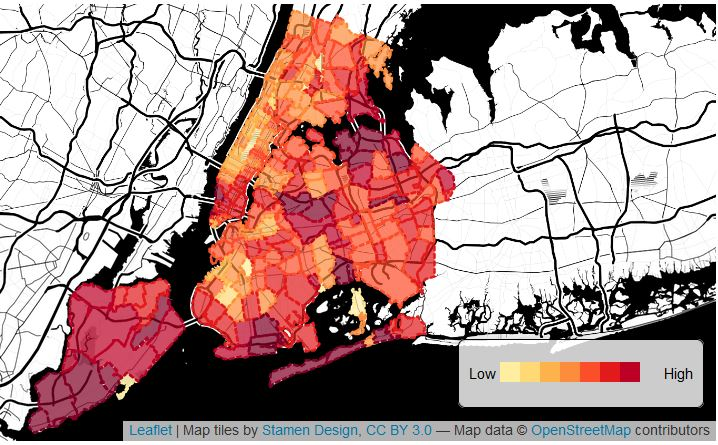
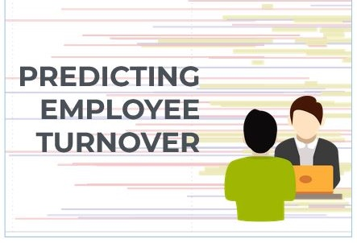

Johnathan is most interested in the intersection of technology and environmentalism leading to smarter decisions about how to sustainably use the earth's resources. Johnathan earned his Bachelor of Science from Marist College in Environmental Science and Policy, a certificate in GIS from Pennsylvania State University, and a Masters in Urban Spatial Analytics from the University of Pennsylvania.
Selected Projects

See details →
Data Engineering & Workflow Automation: COVID-19 Dashboard
Example Dashboard Page | Code

See details →
Guilford County, NC - Employee Turnover Risk Prediction System
Report | Interactive Website